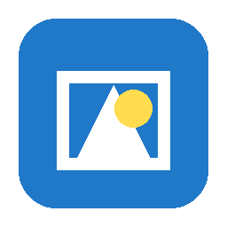

Watches a folder and silently converts .webp, .heic, and .avif to .png
Free for Windows · by heyjmoImageAutoPNG sits in the system tray and watches your Downloads folder (or any folder you choose). When a .webp, .heic, .heif, or .avif image appears, it converts it to PNG in the background—no popups, no browser extension.
Windows SmartScreen: Because this free tool is not code-signed, Windows may say “Windows protected your PC.” Click More info, then Run anyway. That is normal for small free software from independent authors.
Conversion happens locally. The app only reads/writes image files in the folder you choose. Settings live under your user profile (.imageautopng). There is no account and no telemetry.
ImageAutoPNG is free. If it saves you time, a tip via PayPal is appreciated—never required.
Issues and ideas: open an issue on GitHub.